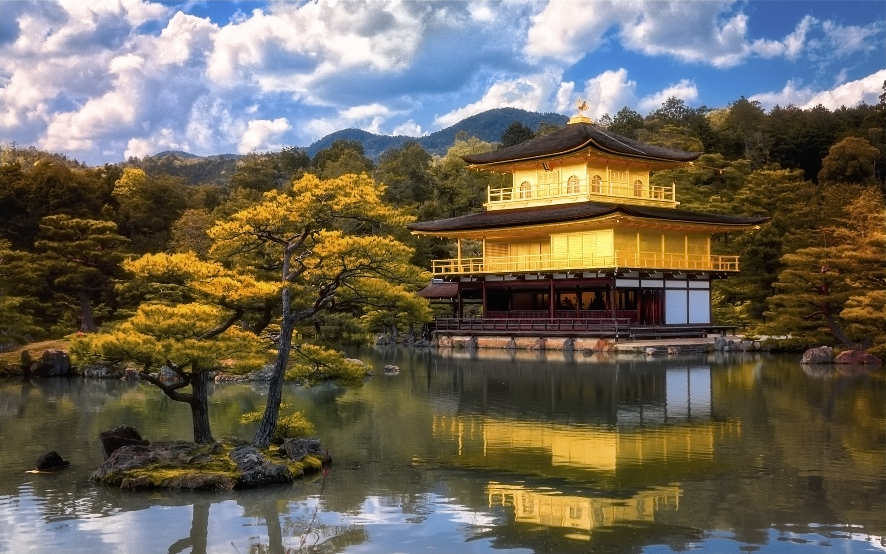
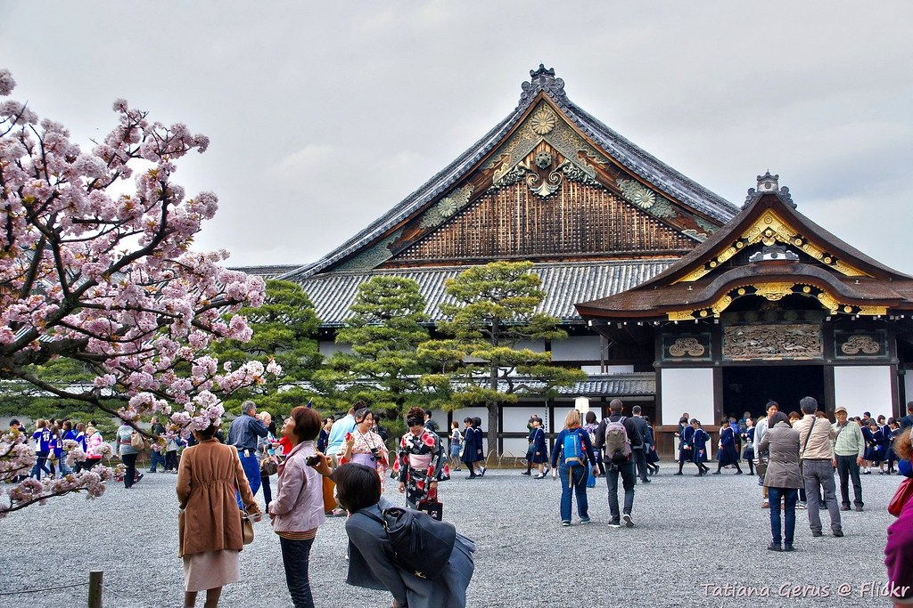
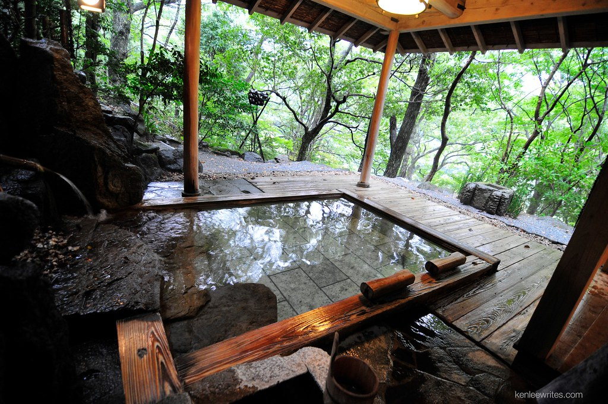

Sans doute la meilleur activité à faire à Kyoto c'est tout simplement de visiter la ville. C'est une ville remplie de vieux monuments qui racontent son histoire et qui vous montre des vues magnifiques au milieu de la nature remplie de couleurs à ne pas rater.
Si vous ne savez pas comment vous y prendre à ce sujet, laissez-moi vous presenter 8 choses à faire, et endroits a visiter durant votre voyage à Kyoto.
1. Le Kinkaku-ji
{kind=link}
Le Kinkaku-ji est un favori des touristes, avec une vue incroyable a n'importe quel temps de l'année. Il peut rapidement s'encombrer avec beaucoup de touristes, pensez à vous y rendre pendant un jour de la semaine.
2. Le Fushimi Inari Taisha
Juste après, les portes de Fushimi Inari Taisha. Les 10,000 portes qui vous emmène au sommet de la colline, avec les différents niveaux ou vous pouvez admirer différents statues, lieu, fait que ce chemin, qui peut vous prendre 2 à 3 heures à completer, et un de plus visité par les touristes. Accompagnés de plusieurs distributeurs, vous aurez tout ce qu'il vous faut pour être assez hydraté durant votre aventure.
3. Le Kiyomizu-dera

C'est ici que vous pourrez trouver fortune, avec la Cascade sacrée d'Otowa situé au niveau inférieur du temple. La cascade est divise en trois et vous êtes munis d'un verre, dépendent de quelle section de la cascade vous decidez de boire cela peut vous donner trois fortunes differentes: La longévité, une réussite scolaire ou une meilleure chance en amour.
4. Le Nijō-jo
{kind=link}
Le Nijō-jo etait anciennement château appartenant au shogun de Tokugawa, et ses jardins et chambres rempli de dessins murals detailles communiquent leur richesse. Si vous vous y rendez prêtez attention au bruit des oiseaux lorsque vous naviguez dans ce château, c'était un mecanisme cree pour alerte en cas de presence d'un intrus, comme les ninjas.
5. Aller dans un onsen
{kind=link}
Un onsen c'est un bain dans de l'eau chaude. Mais pas seulement, c'est un bon moyen de se connecter avec la nature et ses amis, si vous etes comfortable à la nudité en groupe bien sûr. Rendez-vous à Fu-fu-no-yu pour retrouver les onsen les plus incroyables.